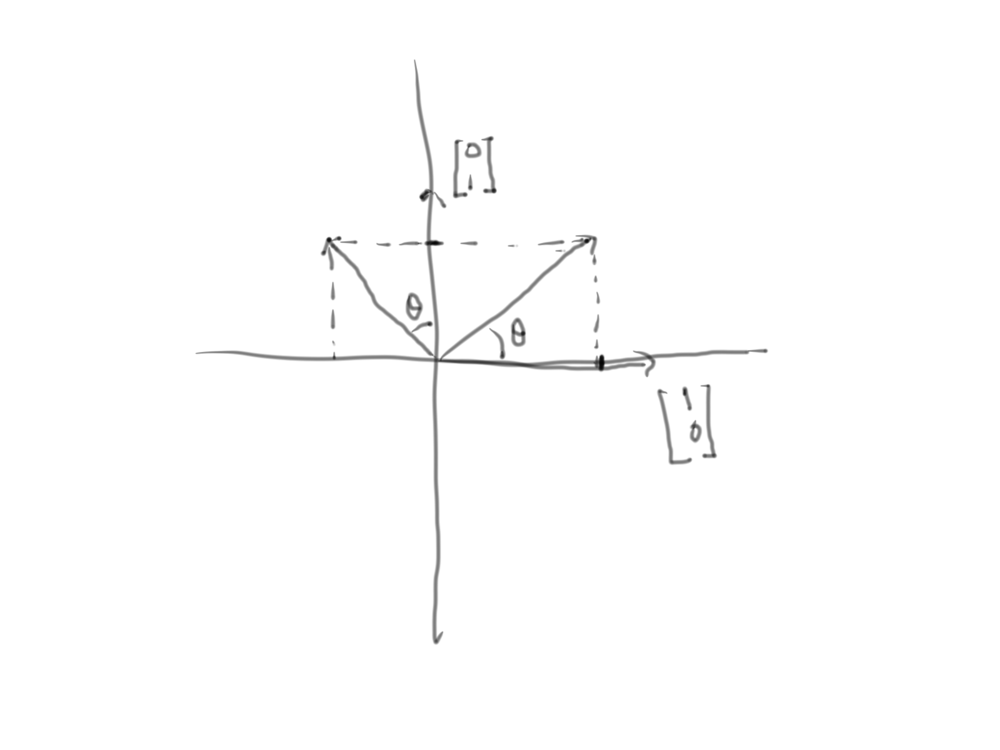
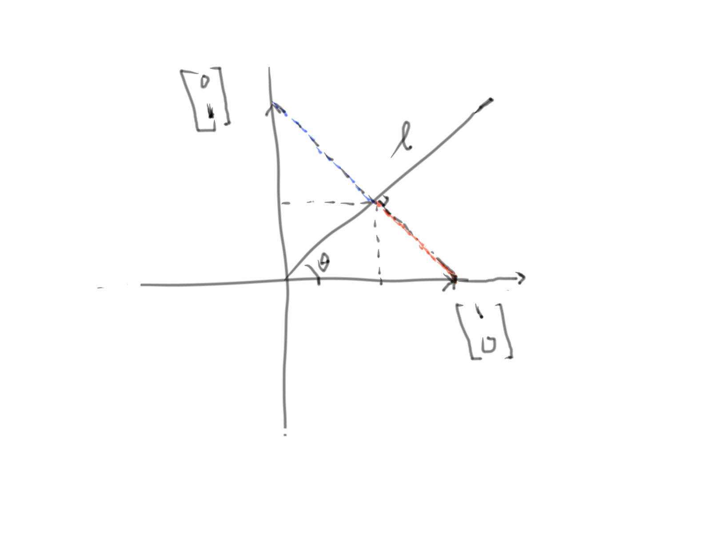
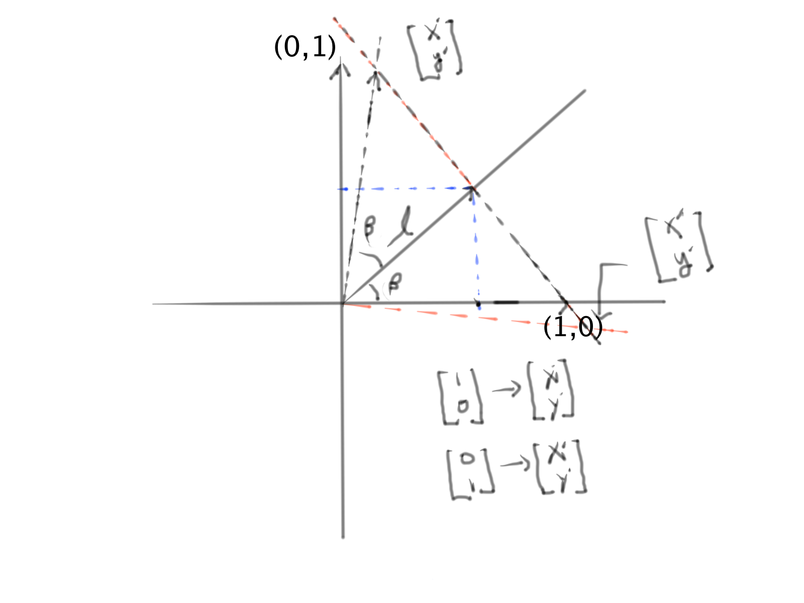

\[ \text{Matrix and Lie Group} \] \[ \text{Rotation matrix} \] \[ A= \begin{bmatrix} \cos(\beta) & -\sin(\beta)\\ \sin(\beta) & \cos(\beta) \end{bmatrix} \] \[ A \text{ is orthonormal matrix, it means } \langle \vec{v_{i}}, \vec{u_{j}} \rangle = 0 \quad i \neq j ,\quad \rvert \vec{v_{i}} \rvert=1 \quad \forall i\] \[ \text{The inverse of A is } A^{-1} = \begin{bmatrix} \cos(-\beta) & -\sin(-\beta)\\ \sin(-\beta) & \cos(-\beta) \end{bmatrix} = \begin{bmatrix} \cos(\beta) & \sin(\beta)\\ -\sin(\beta) & \cos(\beta) \end{bmatrix} \] \[ AA^{-1} = \begin{bmatrix} \cos(\beta) & -\sin(\beta)\\ \sin(\beta) & \cos(\beta) \end{bmatrix} \begin{bmatrix} \cos(\beta) & \sin(\beta)\\ -\sin(\beta) & \cos(\beta) \end{bmatrix} = \begin{bmatrix} 1 & 0\\ 0 & 1 \end{bmatrix} \] \begin{equation} \begin{aligned} & A_{\beta=0}= \begin{bmatrix} 1 & 0\\ 0 & 1 \end{bmatrix} \quad & A_{\beta=\pi/2}= \begin{bmatrix} 0 & -1\\ 1 & 0 \end{bmatrix}\\ & A_{\beta=\pi}= \begin{bmatrix} -1 & 0\\ 0 & -1 \end{bmatrix}\quad & A_{\beta=\pi\frac{3}{2}}= \begin{bmatrix} 0 & 1\\ -1 & 0 \end{bmatrix} \nonumber \end{aligned} \end{equation} Derive Rotation, Projection and Reflection matrix
Suppose A is the standard matrix for a linear transformation $T: \mathbb{R} \rightarrow \mathbb{R}$ that maps three linear indepedent vectors in $\mathbb{R}$, $x$, $y$, and $z$ as follows:
\begin{equation} \begin{aligned} & T:x \rightarrow x' \text{ or } & Ax = x'\\ & T:y \rightarrow y' \text{ or } & Ay = y'\\ & T:z \rightarrow z' \text{ or } & Az = z'\\ & \implies A[x, y, z] = [x', y', z']\\ & \text{let } X = [x, y, z] \text{ and } X' = [x', y', z'] \\ & \implies AX = X' \\ & \implies A = X'X^{-1} \\ & \text{let } X = I \\ & \implies A = X' \end{aligned} \end{equation}

\[ \text{Derive 2 x 2 rotation matrix}\] \[ x = \begin{bmatrix} 1\\ 0 \end{bmatrix} \quad \implies \quad x' = \left[ \begin{array}{c} \cos\beta\\ \sin\beta \end{array} \right] \] \[ y = \begin{bmatrix} 0\\ 1 \end{bmatrix} \quad \implies \quad y' = \left[ \begin{array}{c} -\sin\beta\\ \cos\beta \end{array} \right] \] \begin{equation} \begin{aligned} & X = \begin{bmatrix} 1 & 0\\ 0 & 1 \end{bmatrix} \implies X' = \begin{bmatrix} \cos\beta & -\sin\beta\\ \sin\beta & \cos\beta \end{bmatrix}\\ & \implies A = \begin{bmatrix} \cos\beta & -\sin\beta\\ \sin\beta & \cos\beta \end{bmatrix} \end{aligned} \end{equation} \[ \text{Derive 2 x 2 projection matrix}\]

\begin{equation} \begin{aligned} & X' =\left[ \begin{array}{c} l\cos\beta\\ l\sin\beta \end{array} \right] \quad \text{ and }l = \cos\beta\\ & \implies X' =\left[ \begin{array}{c} \cos^{2}\beta\\ \cos\beta\sin\beta \end{array} \right]\\ & Y' =\left[ \begin{array}{c} l\cos\beta\\ l\sin\beta \end{array} \right] \quad \text{ and }l = \sin\beta\\ & \implies Y' =\left[ \begin{array}{c} \sin\beta \cos\beta\\ \sin^{2}\beta \end{array} \right]\\ & \implies A = \begin{bmatrix} \cos^{2}\beta & \sin\beta \cos\beta\\ \cos\beta \sin\beta & \sin^{2}\beta \end{bmatrix} \end{aligned} \end{equation} \[ \text{Derive 2 x 2 reflection matrix}\]

\[ \text{let angle between } l \text{ and } \vec{x} =\left[ \begin{array}{c} 1\\ 0 \end{array} \right] \text{ is }\beta \] \[ \text{ so the reflection of }\vec{x} \text{ is } \vec{x'} =\left[ \begin{array}{c} \cos2\beta\\ \sin2\beta \end{array} \right] \] \[ \text{angle between } l \text{ and } [\vec{y} =\left[ \begin{array}{c} 0\\ 1 \end{array} \right] \text{ is } \pi/2 - \beta \] \[ \text{ so the reflection of } \vec{y} \text{ is } \] \[ \vec{y'} =\left[ \begin{array}{c} \sin2\beta\\ -\cos2\beta \end{array} \right] \] \[ \text{ Thereforce the reflection matrix is given by } \] \[ H = \begin{bmatrix} \cos2\beta & \sin2\beta\\ \sin2\beta & -\cos2\beta \end{bmatrix} \] \[ \text{ Rotation and reflection matrix form a group } \] \begin{equation} \begin{aligned} R(\beta) = \begin{bmatrix} \cos\beta & -\sin\beta\\ \sin\beta & \cos\beta \end{bmatrix} H(\alpha) = \begin{bmatrix} \cos2\alpha & \sin2\alpha\\ \sin2\alpha & -\cos2\alpha \end{bmatrix} \nonumber \end{aligned} \end{equation} \begin{equation} \begin{aligned} & R(\beta) \circ R(\alpha) = \begin{bmatrix} \cos\beta \cos\alpha - \sin\beta \sin\alpha & -(\cos\beta \sin\alpha + \sin\beta \cos\alpha)\\ \sin\beta \cos\alpha + \cos\beta \sin\alpha & -\sin\beta \sin\alpha + \cos\beta \cos\alpha \end{bmatrix} & = R(\beta + \alpha)\\ & R(\beta) \circ H(\alpha) = \begin{bmatrix} \cos\beta \cos2\alpha - \sin\beta \sin2\alpha & \cos\beta \sin2\alpha + \sin\beta \cos2\alpha \\ \sin\beta \cos2\alpha + \cos\beta \sin2\alpha & \cos\beta \cos2\alpha -\sin\beta \sin2\alpha \end{bmatrix} & = H(\alpha + \frac{\beta}{2})\\ & H(\alpha) \circ R(\beta) = \begin{bmatrix} \cos2\alpha\cos\beta + \sin2\alpha \sin\beta & \cos 2\alpha \sin\beta + \sin2\alpha\cos\beta \\ \sin2\alpha \cos\beta - \cos2\alpha \sin2\beta & -\cos2\alpha \sin\beta - \cos2\alpha \cos\beta \end{bmatrix} & = H(\alpha - \frac{\beta}{2})\\ & H(\beta) \circ H(\alpha) = \begin{bmatrix} \cos2\beta \cos2\alpha + \sin2\beta \sin2\alpha & \cos2\beta \sin2\alpha - \sin2\beta \cos2\alpha \\ \cos2\beta \sin2\alpha - \cos2\beta \sin2\alpha & \sin2\beta \sin2\alpha + \cos2\beta \cos2\alpha \end{bmatrix} & = R(2(\alpha - \beta)) \nonumber \end{aligned} \end{equation} \[ \langle R(\beta) , H(\alpha) \rangle \text{ generates a group} \] \[ \text{ The determinant of the rotation } \det(R) = \cos^{2}\beta + \sin^{2}\beta = 1 \] \[ \text{ The determinant of the reflection } \det(H) = -(\cos^{2}2\alpha+ \sin^{2}2\alpha)= -1 \] \[ \text{ Exponential map } \] \[ exp(A) = \sum_{k=0}^{n} \frac{A^{k}}{k!} \] \[ \text{ If A is n by n matrix, then prove the series is converage} \] \begin{equation} \begin{aligned} \exp(A) & = \sum_{k=0}^{n} \frac{A^{k}}{k!} \\ \sin(A) & = \sum_{k=0}^{n} (-1)^{k}\frac{A^{2k}}{2k!} \\ \cos(A) & = \sum_{k=0}^{n} (-1)^{k}\frac{A^{2k+1}}{(2k+1)!} \\ \cosh(A) & = \sum_{k=0}^{n} \frac{A^{2k}}{(2k)!} \\ \sinh(A) & = \sum_{k=0}^{n} \frac{A^{2k+1}}{(2k+1)!} \nonumber \end{aligned} \end{equation} \[ \text{Let } A = \begin{bmatrix} 0 & -\beta \\ \beta & 0 \end{bmatrix} \] \begin{equation} \begin{aligned} & \exp(A) = \begin{bmatrix} 1 & 0 \\ 0 & 1 \end{bmatrix} + \begin{bmatrix} 0 & -\beta \\ \beta & 0 \end{bmatrix} + \frac{1}{2!} \begin{bmatrix} -\beta^{2} & 0 \\ 0 & \beta^{2} \end{bmatrix} + \frac{1}{3!} \begin{bmatrix} 0 & \beta^{3} \\ -\beta^{3} & 0 \end{bmatrix} + \frac{1}{4!} \begin{bmatrix} \beta^{4} & 0 \\ 0 & \beta^{4} \end{bmatrix} + \frac{1}{5!} \begin{bmatrix} 0 & -\beta^{5}\\ \beta^{5} & 0 \end{bmatrix} \\ & \exp(A) = \begin{bmatrix} 1 + \frac{1}{2!}(-\beta^{2}) + \frac{1}{4!}\beta^{4} + ... & -\beta + \frac{1}{3!}\beta^{3} + ...\\ \beta + \frac{1}{3!}-\beta^{3} + ... & 1 + \frac{1}{2!}\beta^{2} + \frac{1}{4!}\beta^{4} + ... \end{bmatrix} = \begin{bmatrix} \sin(\beta) & -\cos(\beta)\\ \cos(\beta) & \sin(\beta) \end{bmatrix} \end{aligned} \end{equation}